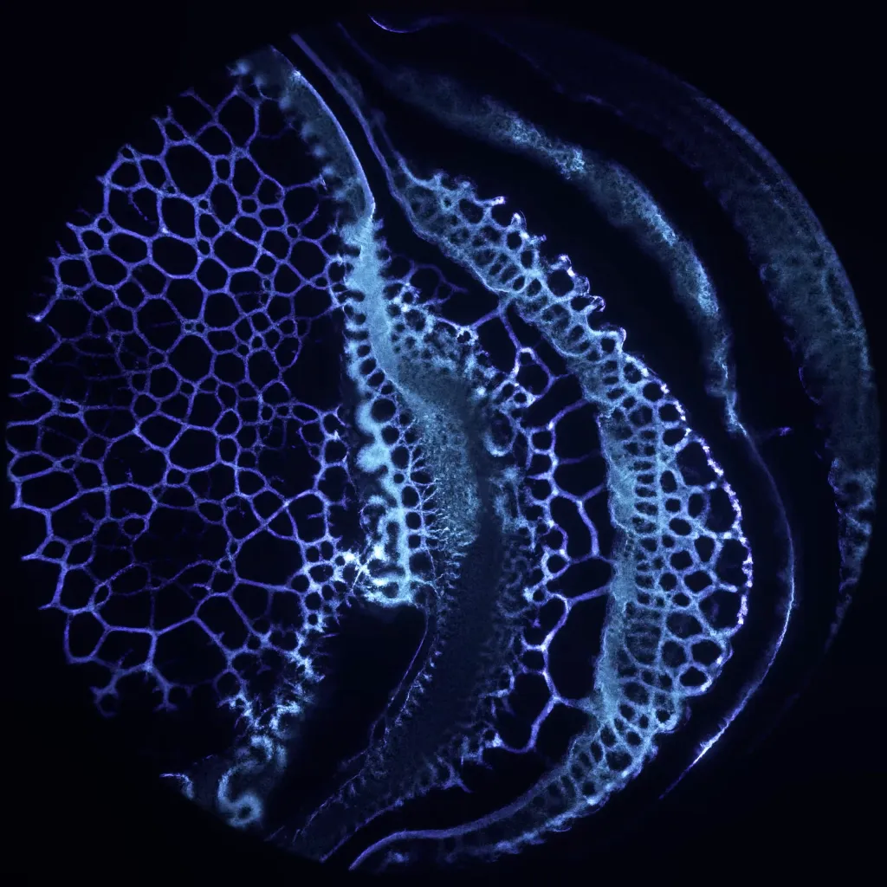

Opto-nano
April 2022
Opto-nano is a hybrid performance developed in collaboration with Jack Philp dance. It is based on professor Paola Borri's research and sets out to explore the various cellular formations of biologic tissue, under multiphoton microscopes.





Project Description
Design
Paola Borri is based at Cardiff University and her research pioneers in the development of novel optical microscopy techniques for nanoparticles imaging, using next generation laser-scanning microscopes. Opto-nano celebrates her work through a dynamic choreography paired with generative visuals that were projected on CultVR's 360 dome.
Inspiration came equally by the intricate micro-structures of biological cells, as well as their interaction with photons and how light travels through them and changes their molecular structure. A digital petri dish was developed, one that cultivated a Physarum Polycephalum, shifting and rearranging itself in response to the dancer's movement as well as the beat of the music.
Additionally a custom ray-tracing system accurately animated a variety of light beams and their reflections and refractions through matter. Taking inspiration from prof. Borri's research and the special optical microscopy techniques she uses, the different light-rays travelled though artificial prisms that helped to focus and disperse the light and enable it to interact with the generated organic cellular micro-organisms.
Collaborators
Jack Philp Dance - choreographer
Paola Borri - professor/lead researcher
CultVR Lab - immersive art venue